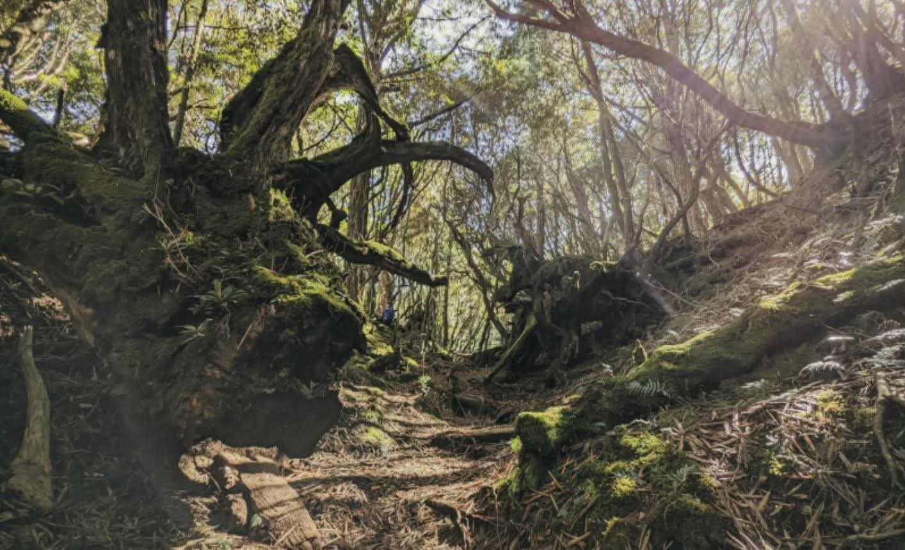

中級訓練
塔曼山｜走進神秘的原始森林

塔曼山位於新北市與桃園市交界， 海拔約 2,130 公尺，是北台灣著名的中級山。 沿途有茂密的原始森林、覆滿青苔的樹木， 以及交錯的樹根與潮濕山徑， 彷彿走進一座神秘的綠色森林。
登山路線資訊
- 地點：新北市與桃園市交界
- 海拔：約 2,130 公尺
- 難度：中級訓練
- 常見路線：塔曼山登山口原路往返
- 路線特色：樹根地形、森林山徑、濕滑路段
- 建議對象：具備郊山經驗與基本體能的登山者
登山裝備建議
建議穿著具有良好抓地力的登山鞋， 攜帶雨衣、保暖衣物、飲水與行動糧。 雨後山徑容易泥濘濕滑， 可視需求使用登山杖輔助通行。
登山注意事項
塔曼山森林濃密，部分路段地形相似， 建議事先下載離線地圖並確認路線。 山區天氣變化快速，應預留足夠的往返時間， 避免摸黑行走。